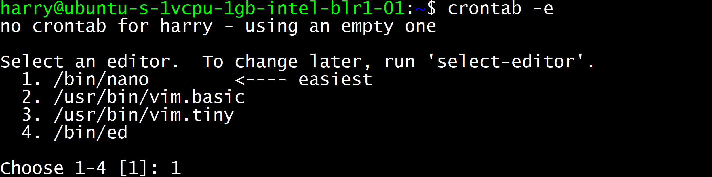

In this post, I will talk about the only crontab commands you will ever need if you are managing a web server. Crontab stands for cron table which is a list of commands that would automatically run at a scheduled interval of time.
For instance, I run a bash file that prerenders all the routes from the CodeWithHarry blog. This saves me the time for manually doing the same when new blogs are added. You might want to update your sitemap, update your blog index or take backups every 24 hours, every week or every month.
crontab -l
crontab -e
The following window will then open once you choose your editor by pressing 1 followed by enter:
Following are some of the ways you can add cronjobs to a Linux machine using the following command
MIN HOUR DOM MON DOW CMD
Field Description Allowed Value MIN Minute field 0 to 59 HOUR Hour field 0 to 23 DOM Day of Month 1-31 MON Month field 1-12 DOW Day Of Week 0-6 CMD Command Any command to be executed.
Following will run the command /home/harry/backup.sh on 11:34 AM 17th May of every year:
34 11 17 05 * bash /home/harry/backup.sh
Following keywords makes the job of a programmer easy by providing keywords for quick job runs.
Keyword Equivalent @yearly 0 0 1 1 * @daily 0 0 * * * @hourly 0 * * * * @reboot Run at startup.
1. The following command will execute the backup.sh file daily:
@daily bash /home/harry/backup.sh
2. The following command will execute the backup.sh file monthly:
@monthly bash /home/harry/backup.sh
3. The following command will execute the backup.sh file yearly:
@yearly bash /home/harry/backup.sh
For anything more than this, you can always refer to the Linux Manpage for Cron Hope this article helps. Happy Coding!